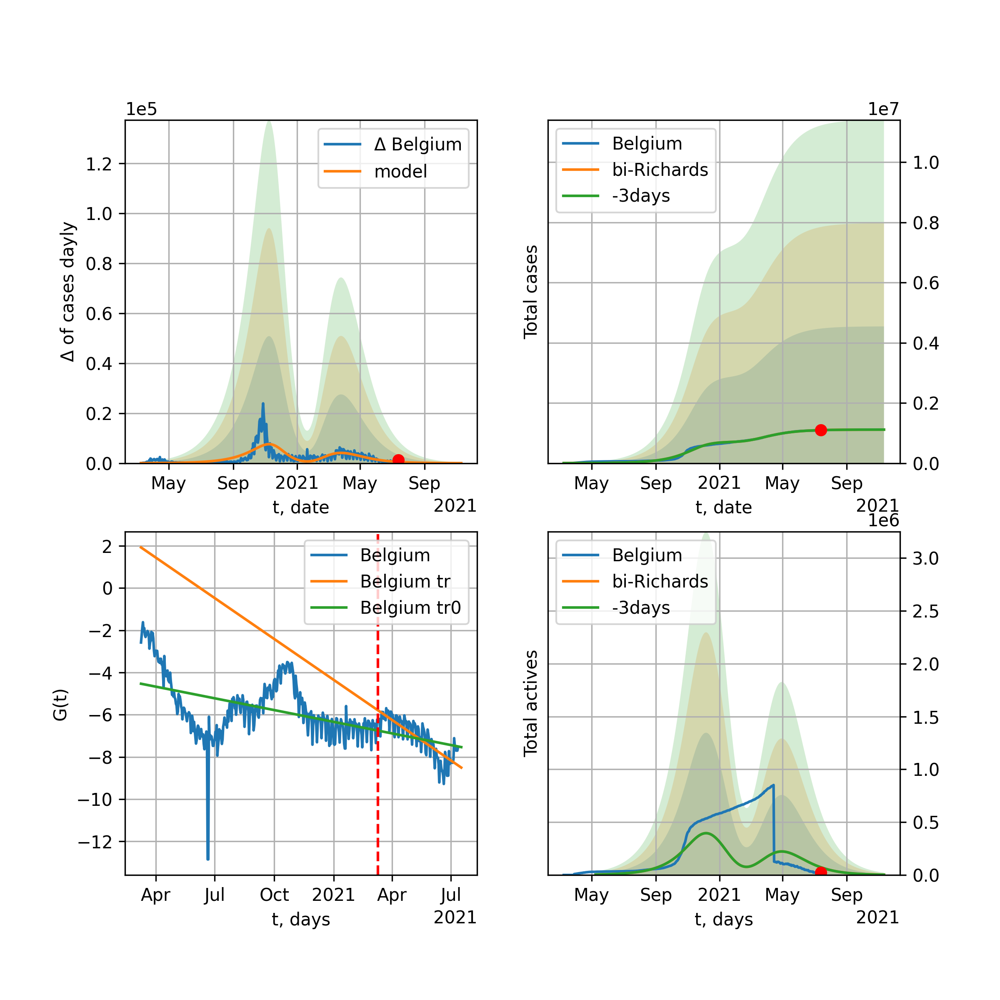

Multi-logistic model of COVID-19 dynamics
Model, code, results
Project maintained by algmaknick Hosted on GitHub Pages — Theme by mattgraham
World

World data at: 2020-11-23
+3 day model MAPE: 0.000398
model: bi-Richards
coeffs: [2.00113163e+07 1.81220344e+00 1.51237615e+02 2.31943649e-02]
rational stdev: 0.176247
forecast at the end of period: +660 days
deltaDaycases: 2650
total cases: 120262957 ± 21196004
total death: 2832811 ± 1497824
bi-Richards approximation splitting point: 200
actives k: 31
trend coefficient of determination: 0.812234
intercept: -3.160518
slope: -0.011111
trend coefficient of determination: 0.128007
intercept: -5.810245
slope: 0.003523
European Union

European Union data at: 2020-11-23
+3 day model MAPE: 0.018493
model: bi-Richards
coeffs: [9.79482904e+06 4.17228221e-02 2.54312970e+02 3.96276051e+00]
rational stdev: 0.239000
forecast at the end of period: +103 days
deltaDaycases: 1
total cases: 11265875 ± 2692542
total death: 256453 ± 183876
bi-Richards approximation splitting point: 200
actives k: 26
trend coefficient of determination: 0.536651
intercept: -49.002864
slope: -0.088784
trend coefficient of determination: 0.941504
intercept: -43.312643
slope: -0.091980
Brazil

Brazil data at: 2020-11-23
+3 day model MAPE: 0.003111
model: bi-Richards
coeffs: [3.11530543e+05 1.96369914e-01 2.59370172e+02 1.27798393e+00]
rational stdev: 0.270082
forecast at the end of period: +250 days
deltaDaycases: 153
total cases: 6867114 ± 1854680
total death: 191237 ± 154948
bi-Richards approximation splitting point: 220
actives k: 17
trend coefficient of determination: 0.836291
intercept: -10.179653
slope: -0.081002
trend coefficient of determination: 0.010823
intercept: -24.535079
slope: -0.003511
Russia

Russia data at: 2020-11-23
+3 day model MAPE: 0.002713
model: bi-Richards
coeffs: [3.05886789e+06 7.05988246e-01 5.39634652e+01 2.84044860e-02]
rational stdev: 0.177546
forecast at the end of period: +320 days
deltaDaycases: 115
total cases: 4186871 ± 743362
total death: 72351 ± 38536
bi-Richards approximation splitting point: 200
actives k: 26
trend coefficient of determination: 0.731342
intercept: -3.032809
slope: -0.015875
trend coefficient of determination: 0.041449
intercept: -5.305406
slope: 0.001948
USA

USA data at: 2020-11-23
+3 day model MAPE: 0.006893
model: bi-Richards
coeffs: [-5.25392563e+05 2.77225485e-01 1.75824202e+02 1.05516532e+00]
rational stdev: 0.282531
forecast at the end of period: +663 days
deltaDaycases: 806
total cases: 22529665 ± 6365338
total death: 464945 ± 394084
bi-Richards approximation splitting point: 155
actives k: 52
trend coefficient of determination: 0.699364
intercept: -13.485271
slope: -0.058082
trend coefficient of determination: 0.039810
intercept: -21.208004
slope: -0.001747
Spain

Spain data at: 2020-11-23
+3 day model MAPE: 0.007241
model: bi-Richards
coeffs: [2.52532734e+06 1.28763989e+00 1.15370817e+01 1.40984653e-02]
rational stdev: 0.261414
forecast at the end of period: +460 days
deltaDaycases: 8
total cases: 2952163 ± 771736
total death: 79239 ± 62142
bi-Richards approximation splitting point: 200
actives k: 35
trend coefficient of determination: 0.156861
intercept: -3.933033
slope: -0.011121
trend coefficient of determination: 0.082039
intercept: -2.798401
slope: -0.007800
Italy

Italy data at: 2020-11-23
+3 day model MAPE: 0.029713
model: bi-Richards
coeffs: [1.33851450e+06 6.59530125e-02 2.60329871e+02 2.49756666e+00]
rational stdev: 0.158980
forecast at the end of period: +75 days
deltaDaycases: 0
total cases: 1588331 ± 252513
total death: 55968 ± 26693
bi-Richards approximation splitting point: 200
actives k: 28
trend coefficient of determination: 0.557832
intercept: -28.038393
slope: -0.065634
trend coefficient of determination: 0.396557
intercept: -30.473824
slope: -0.027321
United Kingdom

United Kingdom data at: 2020-11-23
+3 day model MAPE: 0.001423
model: bi-Richards
coeffs: [1.85666145e+06 1.03177258e-01 2.11548836e+02 4.07111060e-01]
rational stdev: 0.205431
forecast at the end of period: +180 days
deltaDaycases: 19
total cases: 2179624 ± 447761
total death: 78809 ± 48569
bi-Richards approximation splitting point: 200
actives k: 35
trend coefficient of determination: 0.625855
intercept: -6.686991
slope: -0.027116
trend coefficient of determination: 0.445778
intercept: -6.046526
slope: -0.014813
France

France data at: 2020-11-23
+3 day model MAPE: 0.017579
model: bi-Richards
coeffs: [2.00558025e+06 3.55386587e-02 2.50837940e+02 7.51274495e+00]
rational stdev: 0.097134
forecast at the end of period: +145 days
deltaDaycases: 0
total cases: 2148120 ± 208655
total death: 49311 ± 14369
bi-Richards approximation splitting point: 95
actives k: 105
trend coefficient of determination: 0.754420
intercept: -59.288733
slope: -0.506999
trend coefficient of determination: 0.847810
intercept: -81.210739
slope: -0.109653
Germany

Germany data at: 2020-11-23
+3 day model MAPE: 0.027595
model: bi-Richards
coeffs: [8.03113314e+05 5.13596445e-02 2.48929934e+02 3.43753948e+00]
rational stdev: 0.205790
forecast at the end of period: +54 days
deltaDaycases: 1
total cases: 1028085 ± 211569
total death: 15837 ± 9777
bi-Richards approximation splitting point: 210
actives k: 17
trend coefficient of determination: 0.455327
intercept: -40.355782
slope: -0.052090
trend coefficient of determination: 0.843913
intercept: -32.265126
slope: -0.071500
Turkey

Turkey data at: 2020-11-23
+3 day model MAPE: 0.017323
model: bi-Richards
coeffs: [ 3.81506908e+05 1.87387528e+00 -4.15238606e+01 8.90401058e-03]
rational stdev: 0.278657
forecast at the end of period: +306 days
deltaDaycases: 33
total cases: 656817 ± 183026
total death: 18118 ± 15146
bi-Richards approximation splitting point: 190
actives k: 17
trend coefficient of determination: 0.646007
intercept: -2.493092
slope: -0.020706
trend coefficient of determination: 0.607933
intercept: -7.626614
slope: 0.010706
Iran

Iran data at: 2020-11-23
+3 day model MAPE: 0.000249
model: bi-Richards
coeffs: [7.60693182e+06 1.66527876e-01 1.80155028e+02 8.32676665e-02]
rational stdev: 0.259498
forecast at the end of period: +404 days
deltaDaycases: 1349
total cases: 8116924 ± 2106327
total death: 423768 ± 329901
bi-Richards approximation splitting point: 200
actives k: 17
trend coefficient of determination: 0.757531
intercept: -2.899627
slope: -0.019887
trend coefficient of determination: 0.778536
intercept: -8.913000
slope: 0.013303
Canada

Canada data at: 2020-11-23
+3 day model MAPE: 0.005348
model: bi-Richards
coeffs: [1.58328762e+06 4.18824720e-01 2.25059990e+01 2.85637590e-02]
rational stdev: 0.245890
forecast at the end of period: +446 days
deltaDaycases: 187
total cases: 1689258 ± 415372
total death: 57655 ± 42530
bi-Richards approximation splitting point: 200
actives k: 17
trend coefficient of determination: 0.775264
intercept: -2.327418
slope: -0.024032
trend coefficient of determination: 0.417562
intercept: -7.013255
slope: 0.009765
South Africa

South Africa data at: 2020-11-23
+3 day model MAPE: 0.004384
model: bi-Richards
coeffs: [1.67966148e+05 3.68196267e+00 5.96427348e+01 7.98100162e-03]
rational stdev: 0.292995
forecast at the end of period: +40 days
deltaDaycases: 548
total cases: 798844 ± 234057
total death: 21760 ± 19126
bi-Richards approximation splitting point: 200
actives k: 17
trend coefficient of determination: 0.700324
intercept: -1.694557
slope: -0.019471
trend coefficient of determination: 0.087194
intercept: -7.298204
slope: 0.004822
Belgium

Belgium data at: 2020-11-23
+3 day model MAPE: 0.013422
model: bi-Richards
coeffs: [4.82032414e+05 6.29986072e-02 2.35038105e+02 3.80249254e+00]
rational stdev: 0.178843
forecast at the end of period: +75 days
deltaDaycases: 0
total cases: 547982 ± 98002
total death: 15419 ± 8272
bi-Richards approximation splitting point: 170
actives k: 61
trend coefficient of determination: 0.563889
intercept: -35.647797
slope: -0.101511
trend coefficient of determination: 0.784904
intercept: -31.224157
slope: -0.089230
Peru

Peru data at: 2020-11-23
+3 day model MAPE: 0.002223
model: bi-Richards
coeffs: [5.95517988e+05 3.13863155e+00 2.17643323e+01 1.04718797e-02]
rational stdev: 0.249150
forecast at the end of period: +40 days
deltaDaycases: 253
total cases: 956372 ± 238279
total death: 35859 ± 26802
bi-Richards approximation splitting point: 110
actives k: 21
trend coefficient of determination: 0.801555
intercept: -1.456918
slope: -0.026765
trend coefficient of determination: 0.779174
intercept: -2.351329
slope: -0.015230
Netherlands

Netherlands data at: 2020-11-23
+3 day model MAPE: 0.020261
model: bi-Richards
coeffs: [4.46616325e+05 5.10731635e-02 2.33052169e+02 2.32004363e+00]
rational stdev: 0.085169
forecast at the end of period: +40 days
deltaDaycases: 22
total cases: 496679 ± 42301
total death: 9070 ± 2317
bi-Richards approximation splitting point: 150
actives k: 35
trend coefficient of determination: 0.657978
intercept: -22.665087
slope: -0.078787
trend coefficient of determination: 0.803712
intercept: -22.605874
slope: -0.044341
India

India data at: 2020-11-23
+3 day model MAPE: 0.002152
model: bi-Richards
coeffs: [6.36104796e+06 1.03343457e-01 1.43395879e+02 3.07340919e-01]
rational stdev: 0.221704
forecast at the end of period: +320 days
deltaDaycases: 108
total cases: 10556268 ± 2340369
total death: 154417 ± 102704
bi-Richards approximation splitting point: 92
actives k: 13
trend coefficient of determination: 0.894611
intercept: -3.442740
slope: -0.044141
trend coefficient of determination: 0.974769
intercept: -5.020188
slope: -0.020671
Switzerland

Switzerland data at: 2020-11-23
+3 day model MAPE: 0.022756
model: bi-Richards
coeffs: [2.69415359e+05 7.08785628e-02 2.41518495e+02 2.56046791e+00]
rational stdev: 0.194591
forecast at the end of period: +40 days
deltaDaycases: 1
total cases: 305650 ± 59476
total death: 4296 ± 2507
bi-Richards approximation splitting point: 205
actives k: 17
trend coefficient of determination: 0.338346
intercept: -27.574326
slope: -0.035788
trend coefficient of determination: 0.789270
intercept: -13.584770
slope: -0.086406
Ecuador

Ecuador data at: 2020-11-23
+3 day model MAPE: 0.001580
model: bi-Richards
coeffs: [ 1.70043626e+05 1.56779209e+00 -9.93273682e+01 1.05459875e-02]
rational stdev: 0.080243
forecast at the end of period: +180 days
deltaDaycases: 49
total cases: 231963 ± 18613
total death: 16498 ± 3971
bi-Richards approximation splitting point: 80
actives k: 26
trend coefficient of determination: 0.273964
intercept: -2.225420
slope: -0.047345
trend coefficient of determination: 0.037155
intercept: -4.414027
slope: -0.004218
Portugal

Portugal data at: 2020-11-23
+3 day model MAPE: 0.006986
model: bi-Richards
coeffs: [2.79867167e+05 5.22646860e-02 2.48638174e+02 2.38159821e+00]
rational stdev: 0.215524
forecast at the end of period: +75 days
deltaDaycases: 8
total cases: 341490 ± 73599
total death: 5121 ± 3311
bi-Richards approximation splitting point: 185
actives k: 21
trend coefficient of determination: 0.620409
intercept: -23.317475
slope: -0.057599
trend coefficient of determination: 0.685595
intercept: -25.064726
slope: -0.030470
Saudi Arabia

Saudi Arabia data at: 2020-11-23
+3 day model MAPE: 0.000032
model: bi-Richards
coeffs: [3.24305891e+04 2.52127378e+00 3.81981235e+01 9.93863803e-03]
rational stdev: 0.226358
forecast at the end of period: +40 days
deltaDaycases: 147
total cases: 364249 ± 82450
total death: 5938 ± 4032
bi-Richards approximation splitting point: 200
actives k: 17
trend coefficient of determination: 0.970743
intercept: -1.774844
slope: -0.024490
trend coefficient of determination: 0.406691
intercept: -5.096169
slope: -0.008178
Sweden

Sweden data at: 2020-11-20
+3 day model MAPE: 0.062004
model: bi-Richards
coeffs: [1.35193022e+05 6.40790580e-02 2.60086960e+02 4.24802315e+00]
rational stdev: 0.262940
forecast at the end of period: +78 days
deltaDaycases: 0
total cases: 223007 ± 58637
total death: 6858 ± 5409
bi-Richards approximation splitting point: 200
actives k: 35
trend coefficient of determination: 0.717837
intercept: -31.065575
slope: -0.150260
trend coefficient of determination: 0.266885
intercept: -50.851545
slope: -0.014118
Pakistan

Pakistan data at: 2020-11-23
+3 day model MAPE: 0.010081
model: bi-Richards
coeffs: [ 8.11168374e+05 1.28208287e+00 -4.34002093e+01 9.59070489e-03]
rational stdev: 0.276447
forecast at the end of period: +656 days
deltaDaycases: 7
total cases: 1113252 ± 307755
total death: 22693 ± 18820
bi-Richards approximation splitting point: 220
actives k: 26
trend coefficient of determination: 0.851772
intercept: -1.591281
slope: -0.024553
trend coefficient of determination: 0.906126
intercept: -14.441592
slope: 0.035106
Ireland

Ireland data at: 2020-11-23
+3 day model MAPE: 0.010298
model: bi-Richards
coeffs: [4.39776145e+04 5.10283740e-02 2.27420074e+02 2.43529095e+00]
rational stdev: 0.611756
forecast at the end of period: +40 days
deltaDaycases: 0
total cases: 70149 ± 42914
total death: 2006 ± 3681
bi-Richards approximation splitting point: 170
actives k: 35
trend coefficient of determination: 0.614409
intercept: -20.592412
slope: -0.090004
trend coefficient of determination: 0.487812
intercept: -25.511805
slope: -0.024630
Mexico

Mexico data at: 2020-11-23
+3 day model MAPE: 0.004302
model: bi-Richards
coeffs: [2.53734490e+05 3.30365839e+00 1.03256226e+02 1.09495768e-02]
rational stdev: 0.253149
forecast at the end of period: +110 days
deltaDaycases: 286
total cases: 1201095 ± 304056
total death: 116664 ± 88600
bi-Richards approximation splitting point: 200
actives k: 17
trend coefficient of determination: 0.946097
intercept: -1.723497
slope: -0.018575
trend coefficient of determination: 0.086813
intercept: -3.882124
slope: -0.006088
Singapore

Singapore data at: 2020-11-23
+3 day model MAPE: 0.000567
model: bi-Richards
coeffs: [3.97670792e+04 1.45329869e-01 6.74909048e+01 1.97624889e-01]
rational stdev: 0.357304
forecast at the end of period: +40 days
deltaDaycases: 2
total cases: 58909 ± 21048
total death: 28 ± 30
bi-Richards approximation splitting point: 80
actives k: 26
trend coefficient of determination: 0.153652
intercept: -3.135359
slope: -0.017699
trend coefficient of determination: 0.862737
intercept: -1.894247
slope: -0.033582
Chile

Chile data at: 2020-11-23
+3 day model MAPE: 0.002523
model: bi-Richards
coeffs: [1.81703774e+05 2.22865107e+00 2.73965758e+01 1.15845183e-02]
S.Korea scenario coeffs: [0.36242246, 2.56241634, 1.84890887, 0.13324732]
rational stdev: 0.670755
forecast at the end of period: +40 days
deltaDaycases: 359
total cases: 560051 ± 375657
total death: 15606 ± 31403
bi-Richards approximation splitting point: 170
actives k: 10
trend coefficient of determination: 0.913345
intercept: -1.431701
slope: -0.025419
trend coefficient of determination: 0.510983
intercept: -4.340769
slope: -0.007032
Israel

Israel data at: 2020-11-23
+3 day model MAPE: 0.000862
model: bi-Richards
coeffs: [8.39780584e+04 2.52366839e-01 1.86985929e+02 7.74652852e-01]
rational stdev: 0.363624
forecast at the end of period: +19 days
deltaDaycases: 76
total cases: 328871 ± 119585
total death: 2798 ± 3052
bi-Richards approximation splitting point: 186
actives k: 11
trend coefficient of determination: 0.312333
intercept: -10.092756
slope: -0.020159
trend coefficient of determination: 0.768643
intercept: -2.638576
slope: -0.056031
Austria

Austria data at: 2020-11-23
+3 day model MAPE: 0.032973
model: bi-Richards
coeffs: [2.15277776e+05 6.88859687e-02 2.46085847e+02 3.28724411e+00]
rational stdev: 0.252336
forecast at the end of period: +600 days
deltaDaycases: 3
total cases: 994306 ± 250899
total death: 9766 ± 7392
bi-Richards approximation splitting point: 210
actives k: 13
trend coefficient of determination: 0.384521
intercept: -32.414462
slope: -0.040663
trend coefficient of determination: 0.893451
intercept: -16.067457
slope: -0.109111
Belarus

Belarus data at: 2020-11-23
+3 day model MAPE: 0.004482
model: bi-Richards
coeffs: [2.80313852e+05 5.50665868e-01 3.57709055e+01 2.83817867e-02]
rational stdev: 0.095159
forecast at the end of period: +390 days
deltaDaycases: 17
total cases: 351668 ± 33464
total death: 3094 ± 883
bi-Richards approximation splitting point: 200
actives k: 21
trend coefficient of determination: 0.690776
intercept: -2.847165
slope: -0.021886
trend coefficient of determination: 0.760934
intercept: -7.531181
slope: 0.011791
Japan

Japan data at: 2020-11-23
+3 day model MAPE: 0.018691
model: bi-Richards
coeffs: [ 5.33878328e+04 1.22644268e+01 -5.84193094e+01 3.04629868e-03]
rational stdev: 0.070983
forecast at the end of period: +432 days
deltaDaycases: 0
total cases: 376421 ± 26719
total death: 5633 ± 1199
bi-Richards approximation splitting point: 190
actives k: 11
trend coefficient of determination: 0.046687
intercept: -5.238852
slope: 0.003260
trend coefficient of determination: 0.603107
intercept: -12.855273
slope: 0.043072
China

China data at: 2020-11-23
+3 day model MAPE: 0.000269
model: bi-Richards
coeffs: [ 5.35417654e+03 2.44860742e+00 -2.75825533e+02 4.98288941e-03]
rational stdev: 0.070413
forecast at the end of period: +40 days
deltaDaycases: 6
total cases: 86559 ± 6094
total death: 4639 ± 979
bi-Richards approximation splitting point: 110
actives k: 17
trend coefficient of determination: 0.820992
intercept: -2.003200
slope: -0.082721
trend coefficient of determination: 0.138834
intercept: -10.331614
slope: 0.006840
Qatar

Qatar data at: 2020-11-23
+3 day model MAPE: 0.001162
model: bi-Richards
coeffs: [ 3.28288280e+04 1.74342206e+00 -4.68468849e+01 1.14369013e-02]
S.Korea scenario coeffs: [0.36242246, 2.56241634, 1.84890887, 0.13324732]
rational stdev: 0.082318
forecast at the end of period: +40 days
deltaDaycases: 83
total cases: 141452 ± 11644
total death: 242 ± 59
bi-Richards approximation splitting point: 144
actives k: 17
trend coefficient of determination: 0.918596
intercept: -1.948492
slope: -0.030885
trend coefficient of determination: 0.200854
intercept: -5.752995
slope: -0.003834
Poland

Poland data at: 2020-11-23
+3 day model MAPE: 0.024212
model: bi-Richards
coeffs: [9.97953849e+05 8.97974314e-02 2.42879202e+02 1.08364593e+00]
rational stdev: 0.277758
forecast at the end of period: +110 days
deltaDaycases: 31
total cases: 1079852 ± 299937
total death: 16972 ± 14142
bi-Richards approximation splitting point: 170
actives k: 21
trend coefficient of determination: 0.714449
intercept: -9.012413
slope: -0.056067
trend coefficient of determination: 0.204906
intercept: -14.180794
slope: -0.012414
UAE

UAE data at: 2020-11-23
+3 day model MAPE: 0.003537
model: bi-Richards
coeffs: [1.34716331e+05 3.79782817e-02 2.05518209e+02 1.03132540e+00]
rational stdev: 0.107084
forecast at the end of period: +180 days
deltaDaycases: 1
total cases: 191636 ± 20521
total death: 663 ± 212
bi-Richards approximation splitting point: 128
actives k: 11
trend coefficient of determination: 0.901522
intercept: -10.234214
slope: -0.059541
trend coefficient of determination: 0.043076
intercept: -16.167176
slope: -0.002845
Romania

Romania data at: 2020-11-23
+3 day model MAPE: 0.008814
model: bi-Richards
coeffs: [3.09376660e+06 2.60945208e-01 1.12164083e+02 5.49533660e-02]
rational stdev: 0.313686
forecast at the end of period: +453 days
deltaDaycases: 157
total cases: 3173875 ± 995600
total death: 76387 ± 71884
bi-Richards approximation splitting point: 190
actives k: 17
trend coefficient of determination: 0.489626
intercept: -2.929786
slope: -0.013713
trend coefficient of determination: 0.323353
intercept: -6.955667
slope: 0.010063
Panama

Panama data at: 2020-11-23
+3 day model MAPE: 0.008005
model: bi-Richards
coeffs: [1.27276255e+05 1.77604866e+00 3.85578050e+01 1.13092674e-02]
rational stdev: 0.246530
forecast at the end of period: +292 days
deltaDaycases: 9
total cases: 246716 ± 60823
total death: 4712 ± 3484
bi-Richards approximation splitting point: 200
actives k: 26
trend coefficient of determination: 0.737272
intercept: -2.269422
slope: -0.015632
trend coefficient of determination: 0.133430
intercept: -6.413863
slope: 0.004950
Ukraine

Ukraine data at: 2020-11-23
+3 day model MAPE: 0.000790
model: bi-Richards
coeffs: [5.42467888e+06 1.53177951e-01 1.36193632e+02 8.32580262e-02]
rational stdev: 0.284956
forecast at the end of period: +670 days
deltaDaycases: 149
total cases: 6375875 ± 1816846
total death: 110824 ± 94740
bi-Richards approximation splitting point: 175
actives k: 35
trend coefficient of determination: 0.636081
intercept: -2.839560
slope: -0.017004
trend coefficient of determination: 0.061548
intercept: -5.280654
slope: 0.001415
Indonesia

Indonesia data at: 2020-11-22
+3 day model MAPE: 0.001907
model: bi-Richards
coeffs: [9.12105929e+05 1.09160072e-01 5.14048052e+01 1.17039229e-01]
rational stdev: 0.121465
forecast at the end of period: +488 days
deltaDaycases: 16
total cases: 957926 ± 116354
total death: 30528 ± 11124
bi-Richards approximation splitting point: 75
actives k: 17
trend coefficient of determination: 0.833038
intercept: -2.619543
slope: -0.034945
trend coefficient of determination: 0.578532
intercept: -4.165141
slope: -0.008821
Bangladesh

Bangladesh data at: 2020-11-23
+3 day model MAPE: 0.002951
model: bi-Richards
coeffs: [2.98669173e+05 1.12236998e+00 2.21040782e+01 1.43324139e-02]
rational stdev: 0.226439
forecast at the end of period: +208 days
deltaDaycases: 284
total cases: 690056 ± 156255
total death: 9843 ± 6686
bi-Richards approximation splitting point: 200
actives k: 35
trend coefficient of determination: 0.409169
intercept: -2.320010
slope: -0.015580
trend coefficient of determination: 0.028098
intercept: -6.346493
slope: 0.002540
South_Korea

South Korea data at: 2020-11-23
+3 day model MAPE: 0.022081
model: bi-Richards
coeffs: [2.02050143e+04 9.31849737e-02 1.37564666e+02 2.59128018e-01]
rational stdev: 0.166789
forecast at the end of period: +40 days
deltaDaycases: 25
total cases: 30603 ± 5104
total death: 497 ± 248
bi-Richards approximation splitting point: 140
actives k: 26
trend coefficient of determination: 0.428117
intercept: -5.302148
slope: -0.031259
trend coefficient of determination: 0.000724
intercept: -8.000286
slope: 0.000433
Moldova

Moldova data at: 2020-11-23
+3 day model MAPE: 0.008147
model: bi-Richards
coeffs: [ 4.18886835e+05 2.99285457e-01 -2.72780742e+02 2.15282111e-02]
rational stdev: 0.268049
forecast at the end of period: +530 days
deltaDaycases: 132
total cases: 404134 ± 108328
total death: 8906 ± 7161
bi-Richards approximation splitting point: 60
actives k: 26
trend coefficient of determination: 0.539270
intercept: -1.501223
slope: -0.039413
trend coefficient of determination: 0.293250
intercept: -3.741941
slope: -0.004920
Denmark

Denmark data at: 2020-11-23
+3 day model MAPE: 0.004144
model: bi-Richards
coeffs: [2.44860272e+05 8.86634725e-01 9.42427622e+00 1.66420874e-02]
rational stdev: 0.237504
forecast at the end of period: +460 days
deltaDaycases: 6
total cases: 262243 ± 62283
total death: 2887 ± 2057
bi-Richards approximation splitting point: 206
actives k: 17
trend coefficient of determination: 0.228130
intercept: -3.400038
slope: -0.014464
trend coefficient of determination: 0.092364
intercept: -5.336020
slope: 0.004570
Serbia

Serbia data at: 2020-11-23
+3 day model MAPE: 0.012975
model: bi-Richards
coeffs: [1.54661938e+06 4.62574834e-01 1.72305157e+02 5.62941333e-02]
rational stdev: 0.258588
forecast at the end of period: +180 days
deltaDaycases: 1111
total cases: 1537682 ± 397626
total death: 15073 ± 11693
bi-Richards approximation splitting point: 220
actives k: 35
trend coefficient of determination: 0.511853
intercept: -3.536363
slope: -0.014784
trend coefficient of determination: 0.301820
intercept: -8.344790
slope: 0.019134
Kuwait

Kuwait data at: 2020-11-23
+3 day model MAPE: 0.004576
model: bi-Richards
coeffs: [ 1.51532474e+05 1.41433623e+00 -1.97480347e+02 9.39591726e-03]
rational stdev: 0.174045
forecast at the end of period: +89 days
deltaDaycases: 160
total cases: 161428 ± 28095
total death: 998 ± 521
bi-Richards approximation splitting point: 90
actives k: 17
trend coefficient of determination: 0.167605
intercept: -2.533753
slope: -0.009744
trend coefficient of determination: 0.716626
intercept: -3.558055
slope: -0.008158
Philippines

Philippines data at: 2020-11-22
+3 day model MAPE: 0.004531
model: bi-Richards
coeffs: [4.39077153e+05 5.43415115e-02 1.40746683e+02 5.44244000e-01]
rational stdev: 0.231343
forecast at the end of period: +167 days
deltaDaycases: 7
total cases: 443243 ± 102541
total death: 8612 ± 5976
bi-Richards approximation splitting point: 36
actives k: 26
trend coefficient of determination: 0.806674
intercept: -3.364611
slope: -0.145492
trend coefficient of determination: 0.911505
intercept: -7.349394
slope: -0.020683
Norway

Norway data at: 2020-11-23
+3 day model MAPE: 1.411933
model: bi-Richards
coeffs: [2.44081248e+05 4.89346664e-01 8.73763676e+01 3.00172110e-02]
rational stdev: 0.274452
forecast at the end of period: +516 days
deltaDaycases: 4
total cases: 256790 ± 70476
total death: 2406 ± 1980
bi-Richards approximation splitting point: 230
actives k: 35
trend coefficient of determination: 0.216158
intercept: -3.948027
slope: -0.012275
trend coefficient of determination: 0.221582
intercept: -8.725396
slope: 0.017268
Czechia

Czechia data at: 2020-11-23
+3 day model MAPE: 0.010421
model: bi-Richards
coeffs: [4.84747643e+05 6.50095266e-02 2.39316535e+02 2.14282661e+00]
rational stdev: 0.280737
forecast at the end of period: +40 days
deltaDaycases: 17
total cases: 504641 ± 141671
total death: 7478 ± 6298
bi-Richards approximation splitting point: 160
actives k: 17
trend coefficient of determination: 0.566531
intercept: -16.215352
slope: -0.076869
trend coefficient of determination: 0.884515
intercept: -11.721307
slope: -0.076902
Colombia

Colombia data at: 2020-11-23
+3 day model MAPE: 0.000549
model: bi-Richards
coeffs: [6.55672774e+05 2.50300601e+00 1.03476624e+02 1.38716024e-02]
rational stdev: 0.254897
forecast at the end of period: +180 days
deltaDaycases: 19
total cases: 1489842 ± 379756
total death: 42118 ± 32207
bi-Richards approximation splitting point: 170
actives k: 11
trend coefficient of determination: 0.636897
intercept: -2.194597
slope: -0.011668
trend coefficient of determination: 0.554381
intercept: -3.353305
slope: -0.007566
Australia

Australia data at: 2020-11-23
+3 day model MAPE: 0.000762
model: bi-Richards
coeffs: [2.05080100e+04 1.15165300e-01 1.22609375e+02 6.95365578e-01]
rational stdev: 0.050736
forecast at the end of period: +26 days
deltaDaycases: 0
total cases: 27441 ± 1392
total death: 893 ± 135
bi-Richards approximation splitting point: 104
actives k: 26
trend coefficient of determination: 0.543978
intercept: -8.828257
slope: -0.049008
trend coefficient of determination: 0.882323
intercept: -5.312332
slope: -0.042876
Malaysia

Malaysia data at: 2020-11-23
+3 day model MAPE: 0.016656
model: bi-Richards
coeffs: [7.49263640e+04 1.58477907e-01 2.16255564e+02 2.72606893e-01]
rational stdev: 0.219765
forecast at the end of period: +110 days
deltaDaycases: 14
total cases: 83508 ± 18352
total death: 496 ± 327
bi-Richards approximation splitting point: 170
actives k: 15
trend coefficient of determination: 0.710620
intercept: -3.965712
slope: -0.039633
trend coefficient of determination: 0.483079
intercept: -16.139600
slope: 0.039469
Dominican Republic

Dominican Republic data at: 2020-11-23
+3 day model MAPE: 0.007974
model: bi-Richards
coeffs: [4.23807907e+04 4.17828276e+00 4.54281961e+01 7.48934655e-03]
rational stdev: 0.196388
forecast at the end of period: +110 days
deltaDaycases: 13
total cases: 147781 ± 29022
total death: 2460 ± 1449
bi-Richards approximation splitting point: 200
actives k: 35
trend coefficient of determination: 0.783813
intercept: -2.545112
slope: -0.015313
trend coefficient of determination: 0.022268
intercept: -6.753323
slope: 0.004504
Egypt

Egypt data at: 2020-11-23
+3 day model MAPE: 0.004151
model: bi-Richards
coeffs: [ 3.51586486e+04 1.32069906e+00 -6.67109116e+01 1.11920694e-02]
rational stdev: 0.143907
forecast at the end of period: +180 days
deltaDaycases: 31
total cases: 131050 ± 18859
total death: 7582 ± 3273
bi-Richards approximation splitting point: 140
actives k: 43
trend coefficient of determination: 0.798231
intercept: -2.048671
slope: -0.021457
trend coefficient of determination: 0.147704
intercept: -7.256902
slope: 0.003351
Finland

Finland data at: 2020-11-23
+3 day model MAPE: 0.026374
model: bi-Richards
coeffs: [2.58488784e+04 1.63251882e-01 1.68006328e+02 1.59538025e-01]
rational stdev: 0.100282
forecast at the end of period: +201 days
deltaDaycases: 2
total cases: 33350 ± 3344
total death: 583 ± 175
bi-Richards approximation splitting point: 190
actives k: 26
trend coefficient of determination: 0.580204
intercept: -3.703098
slope: -0.030416
trend coefficient of determination: 0.036019
intercept: -7.789610
slope: 0.007653
Morocco

Morocco data at: 2020-11-23
+3 day model MAPE: 0.004015
model: bi-Richards
coeffs: [ 2.06447465e+05 1.36554332e+00 -8.43455480e+01 1.07862646e-02]
rational stdev: 0.278681
forecast at the end of period: +180 days
deltaDaycases: 148
total cases: 475187 ± 132425
total death: 7828 ± 6544
bi-Richards approximation splitting point: 150
actives k: 11
trend coefficient of determination: 0.296707
intercept: -2.726024
slope: -0.013289
trend coefficient of determination: 0.403493
intercept: -2.739213
slope: -0.006427
Uzbekistan

Uzbekistan data at: 2020-11-23
+3 day model MAPE: 0.003725
model: bi-Richards
coeffs: [1.22171681e+04 1.06911185e+01 9.37816299e+01 4.55657423e-03]
rational stdev: 0.438853
forecast at the end of period: +68 days
deltaDaycases: 4
total cases: 73365 ± 32196
total death: 616 ± 810
bi-Richards approximation splitting point: 200
actives k: 11
trend coefficient of determination: 0.459107
intercept: -2.610654
slope: -0.011002
trend coefficient of determination: 0.436108
intercept: -1.472578
slope: -0.018309
Argentina

Argentina data at: 2020-11-23
+3 day model MAPE: 0.003452
model: bi-Richards
coeffs: [1.58746100e+06 4.19869089e-01 7.49917036e+01 5.45626275e-02]
rational stdev: 0.201993
forecast at the end of period: +250 days
deltaDaycases: 41
total cases: 1850667 ± 373822
total death: 49977 ± 30285
bi-Richards approximation splitting point: 140
actives k: 16
trend coefficient of determination: 0.026119
intercept: -3.350342
slope: -0.005022
trend coefficient of determination: 0.796004
intercept: -2.046630
slope: -0.014515
Algeria

Algeria data at: 2020-11-23
+3 day model MAPE: 0.017320
model: bi-Richards
coeffs: [2.69045679e+04 5.10935373e-02 2.26379078e+02 2.25295281e+01]
rational stdev: 0.115380
forecast at the end of period: +40 days
deltaDaycases: 0
total cases: 76951 ± 8878
total death: 2326 ± 805
bi-Richards approximation splitting point: 200
actives k: 35
trend coefficient of determination: 0.944027
intercept: -181.312436
slope: -0.415922
trend coefficient of determination: 0.925193
intercept: -215.264162
slope: -0.176775
Luxembourg

Luxembourg data at: 2020-11-23
+3 day model MAPE: 0.022922
model: bi-Richards
coeffs: [2.40482869e+04 1.36477373e-01 2.30474726e+02 6.99163139e-01]
rational stdev: 0.263508
forecast at the end of period: +1076 days
deltaDaycases: 2
total cases: 60716 ± 15999
total death: 532 ± 420
bi-Richards approximation splitting point: 190
actives k: 17
trend coefficient of determination: 0.268748
intercept: -8.604333
slope: -0.021135
trend coefficient of determination: 0.004080
intercept: -11.325334
slope: 0.002350
Thailand

Thailand data at: 2020-11-23
+3 day model MAPE: 0.001105
model: bi-Richards
coeffs: [ 1.91806081e+03 8.15614304e-01 -3.57677719e+02 9.99925889e-03]
rational stdev: 0.049291
forecast at the end of period: +110 days
deltaDaycases: 3
total cases: 4408 ± 217
total death: 67 ± 9
bi-Richards approximation splitting point: 60
actives k: 17
trend coefficient of determination: 0.843445
intercept: -1.263575
slope: -0.117629
trend coefficient of determination: 0.104523
intercept: -8.170692
slope: 0.006686
Hungary

Hungary data at: 2020-11-22
+3 day model MAPE: 0.006484
model: bi-Richards
coeffs: [8.48322574e+04 7.73260212e-02 2.46430590e+02 2.90325581e+00]
rational stdev: 2.333536
forecast at the end of period: +61 days
deltaDaycases: 1
total cases: 254786 ± 594552
total death: 5571 ± 39000
bi-Richards approximation splitting point: 210
actives k: 35
trend coefficient of determination: 0.574428
intercept: -19.840224
slope: -0.070820
trend coefficient of determination: 0.969538
intercept: -10.871823
slope: -0.106423
Greece

Greece data at: 2020-11-23
+3 day model MAPE: 0.008212
model: bi-Richards
coeffs: [5.85154058e+04 1.11443727e-01 2.43937697e+02 1.55999125e+00]
rational stdev: 0.459893
forecast at the end of period: +145 days
deltaDaycases: 0
total cases: 181354 ± 83403
total death: 3342 ± 4610
bi-Richards approximation splitting point: 210
actives k: 46
trend coefficient of determination: 0.446876
intercept: -14.581760
slope: -0.024693
trend coefficient of determination: 0.639450
intercept: -11.183990
slope: -0.038056
Iraq

Iraq data at: 2020-11-23
+3 day model MAPE: 0.001284
model: bi-Richards
coeffs: [ 7.44551015e+05 6.33469535e-01 -7.34731051e+01 2.37929695e-02]
rational stdev: 0.196774
forecast at the end of period: +292 days
deltaDaycases: 46
total cases: 750161 ± 147612
total death: 16743 ± 9883
bi-Richards approximation splitting point: 80
actives k: 17
trend coefficient of determination: 0.289212
intercept: -2.622872
slope: -0.017314
trend coefficient of determination: 0.938115
intercept: -1.635559
slope: -0.016145
Croatia

Croatia data at: 2020-11-23
+3 day model MAPE: 0.034734
model: bi-Richards
coeffs: [8.49404333e+04 5.88044277e+00 1.47916189e+02 9.87901564e-03]
rational stdev: 0.421242
forecast at the end of period: +110 days
deltaDaycases: 3
total cases: 190258 ± 80144
total death: 2516 ± 3179
bi-Richards approximation splitting point: 200
actives k: 11
trend coefficient of determination: 0.001709
intercept: -4.998563
slope: 0.001434
trend coefficient of determination: 0.009417
intercept: -4.439555
slope: 0.003651
Iceland

Iceland data at: 2020-11-23
+3 day model MAPE: 0.003303
model: bi-Richards
coeffs: [3.47296497e+03 4.69631177e-02 2.28894370e+02 3.10023720e+00]
rational stdev: 0.171102
forecast at the end of period: +40 days
deltaDaycases: 0
total cases: 5255 ± 899
total death: 25 ± 12
bi-Richards approximation splitting point: 170
actives k: 17
trend coefficient of determination: 0.354107
intercept: -23.139414
slope: -0.059612
trend coefficient of determination: 0.447826
intercept: -22.529786
slope: -0.035133
Estonia

Estonia data at: 2020-11-22
+3 day model MAPE: 0.001345
model: bi-Richards
coeffs: [2.53189362e+04 6.13787529e-02 2.64546493e+02 5.79426363e+00]
rational stdev: 0.182832
forecast at the end of period: +75 days
deltaDaycases: 14
total cases: 30082 ± 5500
total death: 277 ± 151
bi-Richards approximation splitting point: 210
actives k: 26
trend coefficient of determination: 0.484628
intercept: -44.566113
slope: -0.044045
trend coefficient of determination: 0.728865
intercept: -32.233786
slope: -0.095189
Bulgaria

Bulgaria data at: 2020-11-23
+3 day model MAPE: 0.009025
model: bi-Richards
coeffs: [1.58171659e+05 1.64404691e-01 2.22220283e+02 4.29675515e-01]
rational stdev: 0.203812
forecast at the end of period: +110 days
deltaDaycases: 2
total cases: 180590 ± 36806
total death: 4435 ± 2711
bi-Richards approximation splitting point: 210
actives k: 35
trend coefficient of determination: 0.682606
intercept: -5.498619
slope: -0.019929
trend coefficient of determination: 0.208287
intercept: -2.973059
slope: -0.022279
New Zealand

New Zealand data at: 2020-11-23
+3 day model MAPE: 0.003002
model: bi-Richards
coeffs: [5.96222299e+02 1.15625468e-01 9.19806306e+01 2.07736882e-01]
rational stdev: 0.015626
forecast at the end of period: +61 days
deltaDaycases: 0
total cases: 2071 ± 32
total death: 25 ± 1
bi-Richards approximation splitting point: 100
actives k: 17
trend coefficient of determination: 0.540932
intercept: -4.564575
slope: -0.082578
trend coefficient of determination: 0.030855
intercept: -9.200284
slope: 0.004822
Slovenia

Slovenia data at: 2020-11-23
+3 day model MAPE: 0.026536
model: bi-Richards
coeffs: [7.03369222e+04 3.63763455e+00 1.65776173e+02 1.67845865e-02]
rational stdev: 0.403693
forecast at the end of period: +215 days
deltaDaycases: 0
total cases: 132274 ± 53398
total death: 2205 ± 2670
bi-Richards approximation splitting point: 219
actives k: 17
trend coefficient of determination: 0.004439
intercept: -4.815304
slope: -0.002058
trend coefficient of determination: 0.135354
intercept: 5.654197
slope: -0.038734
Slovakia

Slovakia data at: 2020-11-22
+3 day model MAPE: 0.015887
model: bi-Richards
coeffs: [1.01967084e+05 8.40255710e-02 2.27176418e+02 1.10497148e+00]
rational stdev: 0.288051
forecast at the end of period: +41 days
deltaDaycases: 43
total cases: 107190 ± 30876
total death: 747 ± 645
bi-Richards approximation splitting point: 170
actives k: 30
trend coefficient of determination: 0.328097
intercept: -9.620603
slope: -0.034176
trend coefficient of determination: 0.737934
intercept: -3.526458
slope: -0.051481
Lithuania

Lithuania data at: 2020-11-23
+3 day model MAPE: 0.026643
model: bi-Richards
coeffs: [7.61649027e+04 1.63630416e-01 2.30318750e+02 4.22964097e-01]
rational stdev: 0.306683
forecast at the end of period: +285 days
deltaDaycases: 0
total cases: 137320 ± 42113
total death: 1116 ± 1026
bi-Richards approximation splitting point: 220
trend coefficient of determination: 0.146618
intercept: -6.591689
slope: -0.010065
trend coefficient of determination: 0.542927
intercept: 0.363383
slope: -0.032068
Latvia

Latvia data at: 2020-11-23
+3 day model MAPE: 0.010184
model: bi-Richards
coeffs: [3.70421119e+04 8.56991858e-02 2.29984075e+02 4.30716507e-01]
rational stdev: 0.103543
forecast at the end of period: +145 days
deltaDaycases: 9
total cases: 38040 ± 3938
total death: 465 ± 144
bi-Richards approximation splitting point: 175
actives k: 35
trend coefficient of determination: 0.382242
intercept: -6.371002
slope: -0.023563
trend coefficient of determination: 0.066567
intercept: -10.231586
slope: 0.012785
Cyprus

Cyprus data at: 2020-11-23
+3 day model MAPE: 0.041379
model: bi-Richards
coeffs: [1.00817540e+04 8.44086915e-02 2.34672575e+02 9.24172551e-01]
rational stdev: 0.237633
forecast at the end of period: +110 days
deltaDaycases: 0
total cases: 11578 ± 2751
total death: 56 ± 39
bi-Richards approximation splitting point: 190
actives k: 35
trend coefficient of determination: 0.377561
intercept: -8.841735
slope: -0.026712
trend coefficient of determination: 0.014831
intercept: -10.492136
slope: -0.003840
Malta

Malta data at: 2020-11-23
+3 day model MAPE: 0.008695
model: bi-Richards
coeffs: [3.29307759e+04 3.58317976e-01 1.09628734e+01 3.26078626e-02]
rational stdev: 0.284259
forecast at the end of period: +299 days
deltaDaycases: 20
total cases: 49094 ± 13955
total death: 616 ± 525
bi-Richards approximation splitting point: 170
actives k: 17
trend coefficient of determination: 0.175303
intercept: -3.574417
slope: -0.020130
trend coefficient of determination: 0.015897
intercept: -5.033982
slope: 0.002962
Sri Lanka

Sri Lanka data at: 2020-11-23
+3 day model MAPE: 0.035669
model: bi-Richards
coeffs: [1.95730008e+04 5.02447645e-02 2.34605926e+02 3.94166044e+00]
rational stdev: 0.159200
forecast at the end of period: +61 days
deltaDaycases: 0
total cases: 21643 ± 3445
total death: 94 ± 44
bi-Richards approximation splitting point: 120
actives k: 17
trend coefficient of determination: 0.881907
intercept: -22.522182
slope: -0.136878
trend coefficient of determination: 0.334483
intercept: -33.305634
slope: -0.028547
References
- Worldometers COVID-19 Coronavirus Pandemic
- Su COVID-19 susijusi gyventojų ir verslo statistika
- Bi-logistic growth
- Least squares
- scikit-learn
- scipy.org
- European Centre for Disease Prevention and Control An agency of the European Union
- Aaron Miller, Mac Josh Reandelar, Kimberly Fasciglione, Violeta Roumenova, Yan Li, Gonzalo H Otazu, Correlation between universal BCG vaccination policy and reduced morbidity and mortality for COVID-19: an epidemiological study, https://doi.org/10.1101/2020.03.24.20042937
- c19.se